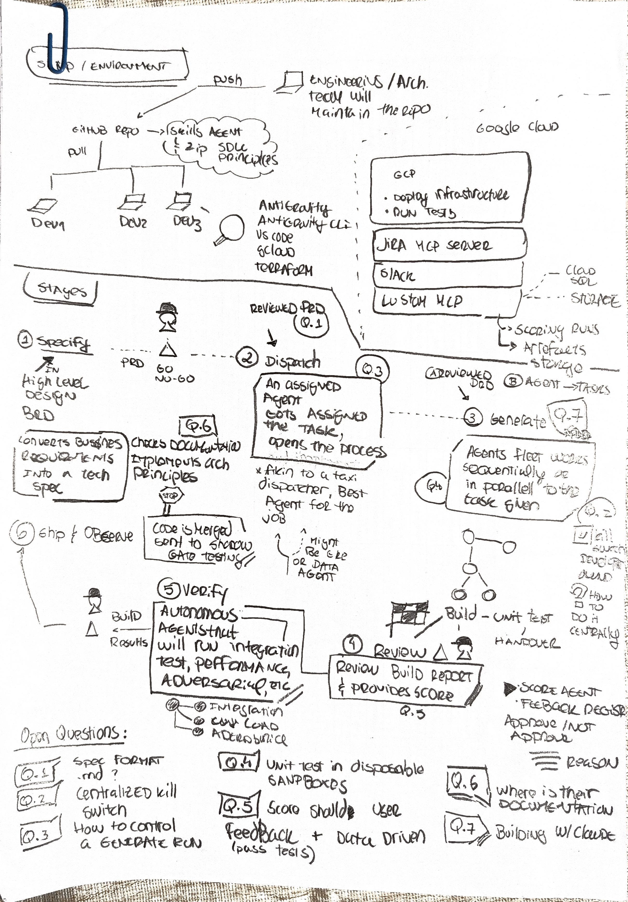
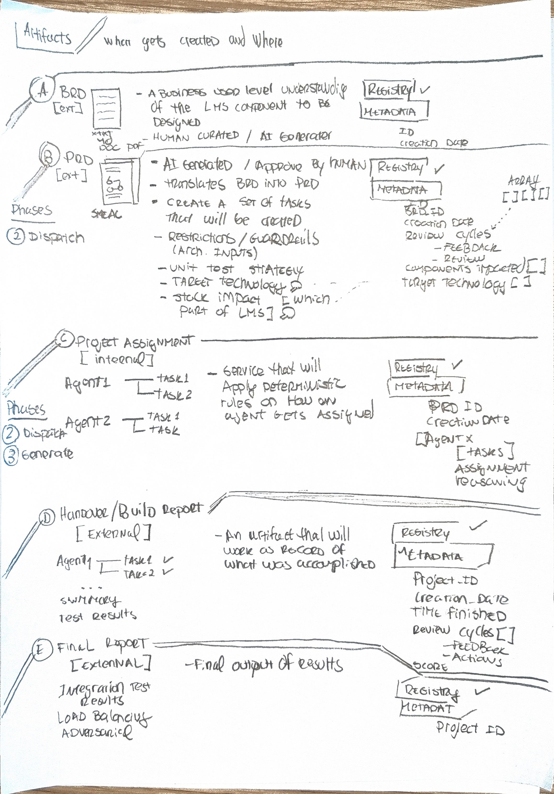
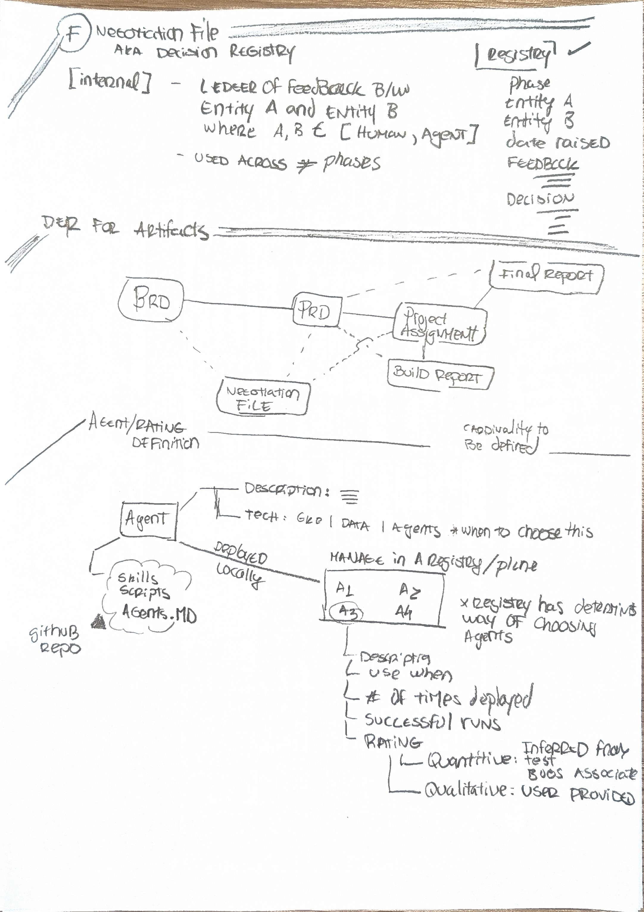
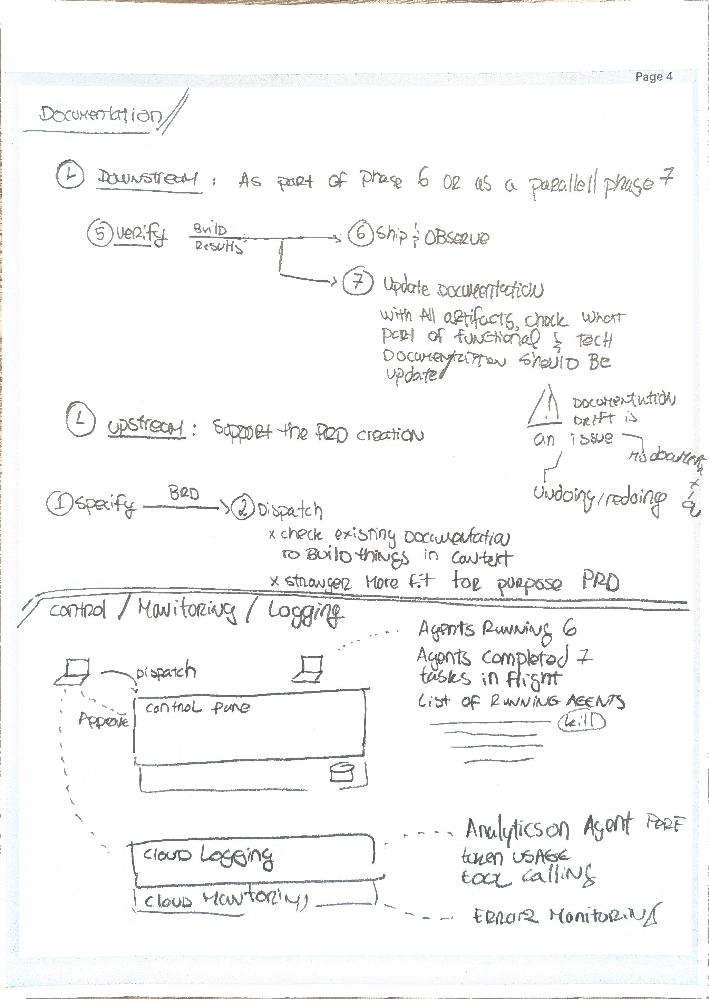
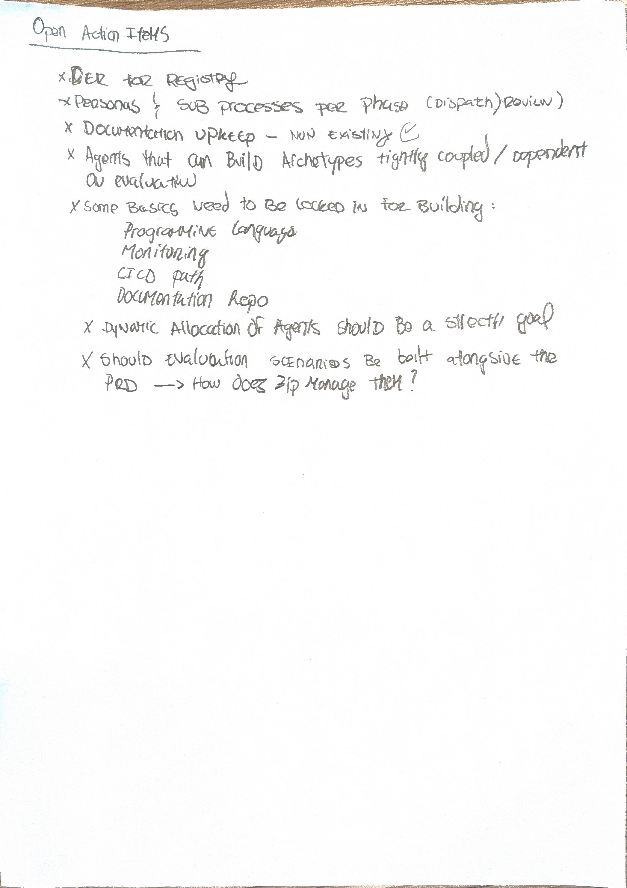

Five pages of handwritten architecture transcribed into reusable engineering artifacts — with the open governance questions put on the table and an interactive dynamic pipeline suite.
Curated narrative deck: whiteboard transcriptions, 7-phase pipeline, oversight models, Double Diamond design, and the Part II Working Session decision workshop.
Live deep-dive suite across 7 pipeline stages, the 28-persona directory, artifact schemas & interactive DER diagram, GCP architecture map, and interactive parking list.
The source was five scanned pages across two files, with no text layer — nothing searchable, nothing reusable. Everything here is traceable back to those pages.
All five pages captured verbatim, one Markdown file per page, with uncertain readings flagged rather than guessed.
Six artifacts, seven phases, the agent record and the control plane extracted into structured JSON.
Every diagram rebuilt as editable Mermaid source — version-controllable, not a photo.
Gaps, ambiguities and contradictions collected into a triaged parking lot.
✓ Then cross-referenced against the working corpus. Five further documents already sit in the project folder — the persona catalogue, the Agent Factory PRD, the FDE scope notes and engagement plan. Reading them against the whiteboard closed five open items and advanced four more. Slides marked “from the working corpus” draw on those rather than the scans.
The transcription discipline: verbatim page records are kept separate from the synthesis. The raw record stays auditable against the scan; the interpretation is a layer on top that can be rewritten without losing the source of truth. Anywhere this deck reasons beyond what is written, it says inferred.
Nothing important lives in a chat log. Six artifact types, each with defined metadata, each registered. Auditability is designed in rather than retrofitted.
All six artifacts carry a Registry ✓ mark. The registry also holds the agents — and it is what routes work to them.
The Negotiation File captures human↔agent and agent↔agent feedback as structured, auditable records. Most agentic designs lose this in chat history.
What the pipeline writes at the end is what it reads as context at the beginning. The loop either closes or it doesn't.
Antigravity · Antigravity CLI · VS Code · gcloud · Terraform
Deploy infrastructure · run tests
| Cloud SQL | scoring runs |
| Cloud Storage | artefacts storage |
This answers where the registry and artifacts physically live — previously unstated.
Jira MCP Server · Slack · Custom MCP — named, but unscoped.
The most under-specified important thing in the architecture. “Skills Agent = Zip SDLC Principles” is the mechanism by which Zip's house engineering rules reach every agent in the fleet — effectively the governance backbone — and it appears exactly once, as a callout, with no detail on how principles are encoded, versioned, tested or enforced.
✓ Phase (4) is Review — attested on the late-arriving page 1: “reviews the Build Report and provides a score”, producing Score agent, Feedback register and Approve / Not approve + Reason. Until that page arrived this was an open inference.
✓ And nothing is missing. One of the sheets is labelled “Page 4” by the author, which looked like a gap in the scan. With page 1 counted, that sheet is page 4. The set is complete at five pages.
The artifact pages say what gets produced. This page says who decides between each step — and where the author's own open questions sit.
IN: high level design → BRD
Converts business requirements into a tech spec. Checks documentation, implements architecture principles. Q.6
An agent gets assigned the task and opens the process.
“Akin to a taxi dispatcher — best agent for the job.” Might be a GKE or Data Agent. Q.1
IN: (A) reviewed PRD (B) agent
Agent fleet works sequentially or in parallel Q.4, fanning out as a tree. Kill switch Q.2.
OUT: build → unit test → handover
Reviews the Build Report and provides a score. Produces:
Autonomous agent stack runs:
🛑 Code is merged, sent to shadow gate testing — a hard gate before production.
The term isn't defined anywhere in the set.
Three explicit human touchpoints: PRD GO / NO-GO between Specify and Dispatch · Approve / Not approve + Reason at Review · a persona attached to Build / Results at Verify. This is the clearest statement of the human-in-the-loop design anywhere in the five pages — and it's also the clearest picture of where the review bottleneck will form.
“Feedback register” at stage 4 is almost certainly the Negotiation File from the artifact pages, seen from the process side rather than the artifact side. Worth confirming — if so, it's the same object under two names, which matters for the entity model.
The whiteboard shows where humans sit. The working documents say how much authority they hold at each stage — and the distinction between supervised and verified is doing real work.
| Stage | Oversight level | What happens | |
|---|---|---|---|
| 1 | Specify | supervised signed spec or no run | Requirements & Architecture agents draft specifications — author and judge are never the same. The engineer interrogates, corrects and signs off. |
| 2 | Dispatch | supervised the plane enforces it | The registry checks the agent's certificate, clears the run, and the control plane issues least-privilege audit records. |
| 3 | Generate | supervised kill-switch in place | The Antigravity fleet builds in disposable Cloud Run sandboxes. Frontier models are consumed as inference and routed across Gemini / Claude; tools, skills and evals remain owned assets. |
| 4 | Review | verified every change against spec | The engineer reviews every change against the specification. The autonomy rung manager governs promotions and demotions — routine tasks advance as confidence is proven. |
| 5 | Verify | verified evidence, not just a passing test | Independent agents isolated from generation run regulatory conformance, reconciliation, load and chaos suites, producing an owned evidence pack for human sign-off. |
| 6 | Ship & Observe | verified cutover is a business decision, not a date | Merged code routes to the shadow gate, mirroring live production traffic against the incumbent at scale with zero customer impact until full verification. |
Always-on cross-cutting controls: full trace telemetry to Google Cloud Observability with immutable audit records in Cloud Logging · a central kill-switch maintained across all sandbox execution environments.
✓ This closes three of your own questions. Q.2 central kill switch — specified as an always-on control. Q.4 unit test in disposable sandboxes — yes, disposable Cloud Run. Q.7 building w/ Claude — frontier models consumed as inference and routed across Gemini and Claude, with tools, skills and evals staying owned.
Alternating between divergent discovery and convergent gates across problem and solution spaces to guarantee lending correctness.
Domain SME interviews across 5 LMS domains, clause-by-clause regulatory mapping (Reg Z, Reg B, PCI DSS), legacy Azure code reverse-engineering, and customer distress journeys.
Spec Adversary eliminates ambiguity; Requirements Architect compiles high-definition PRD contract. Control plane binds token budget and blast radius in the Project Assignment.
BRD · Regulatory Matrix · Domain Invariants · PRD Contract · Project Assignment
Parallel sandbox code generation in Cloud Run, isolated spec-derived test authoring, idempotent loan book backfill scripts, and adversarial red-team vulnerability probes.
Financial double-entry balance proofs ($0.00 drift), 10x peak load chaos mesh, live shadow-gate traffic mirroring against Azure, executive cutover, and golden spec library updates.
Sandbox Build Report · AST Conformance Diff · Auditor Evidence Pack · Shadow Divergence Log · Golden Spec Templates
The Double Diamond advantage for Zip: skips neither discovery nor verification. Traditional LLM code generation jumps straight from vague prompt to build (skipping Diamond 1), resulting in costly hallucination rework. By enforcing convergence at the PRD gate and verification at the shadow gate, the factory guarantees mathematical and regulatory fidelity.
~28 persona definitions · ~45 running instances at full parallel build across five LMS domains. This is the answer to “personas & sub-processes per phase” from your open-items list.
Product Manager · Domain SME ×5 (Decisioning, Issuing, Repayments, Customer Master, Merchant Engine) · Regulatory & Compliance Analyst · Spec Adversary
Integration Engineer — contracts, API and event schemas, idempotency, retries, ordering, partial-failure modes.
The generation fleet proper.
The judging layer, held separate from the authoring layer by design.
Regulatory Conformance Verifier — “auditor-legible evidence, not a pass/fail” · SRE / Resilience — “where does this degrade first under 10× load?”
Persona Steward · Eval Engineer · Autonomy Rung Governor · Token Economics Analyst
Family F is the one to argue for. Per the catalogue, none of these appear in the current PRD — and they are “the layer that distinguishes a factory from a collection of prompts.” The Token Economics Analyst in particular is what turns “unit cost of delivery falls each cycle” from an unfalsifiable assertion into a measurable claim.
The persona that writes a spec is never the persona that approves it. This is structural, not procedural — and it is the same separation the architecture applies at Stage 5, where verifying agents are isolated from generation.
Not prompt snippets. They carry versions, get evaluated, and drift after model upgrades — which is exactly why the Persona Steward exists to diagnose and re-baseline.
A deliberate limit on the pattern. Worth holding onto: the failure mode of persona-based design is inventing one for every task until the catalogue is unmaintainable.
Principle 1 connects directly to the whiteboard. The Negotiation File exists to record disagreement between two entities — and principle 1 guarantees there will always be two distinct entities to disagree. The artifact and the persona model are solving the same problem from opposite ends.
Principle 2 has an unfunded consequence. If personas are versioned, evaluated assets that drift after model upgrades, they need the same registry treatment as agents — version, rating, evaluation history. Nothing in the transcribed architecture models a persona as a registry entity. That's a gap in the entity model we should add.
“Shadow gate testing” on the whiteboard is now explained: merged code mirrors live production traffic against the incumbent system at scale, with zero customer impact. The working notes then identify two sub-steps that are missing from it — and for a loan management system, both are serious.
Shadow traffic runs against a system that moves money. Without explicit suppression, mirrored requests can fire real disbursements, real repayment collections, real customer notifications and real credit-bureau reporting.
This has to be designed, not assumed.
Once shadow state diverges from legacy by even a single rounding difference, every subsequent comparison inherits the error and produces cascading false divergences.
Without periodic re-baselining from the system of record, “the divergence queue becomes noise within weeks and the gate stops carrying meaning.”
Why this matters more than it looks. The shadow gate is the last line of defence before customer impact — it is the control that makes “cutover is a business decision, not a date” true. A shadow gate that silently degrades into noise doesn't fail loudly; it keeps producing green dashboards while the comparison underneath has stopped meaning anything. This is the failure mode to design against explicitly.
Every artifact is tagged external (stakeholder-facing) or internal (machine-to-machine), and every one carries a Registry ✓ mark.
| Artifact | Visibility | Origin | Purpose | |
|---|---|---|---|---|
| A | BRD | external | human curated / AI generated | Business-user-level understanding of the LMS component to be designed |
| B | PRD | external | AI generated / human approved | Translates BRD → PRD; creates the task set and the engineering contract |
| C | Project Assignment | internal | service | Applies deterministic rules to assign agents to tasks |
| D | Handover / Build Report | external | agents | Record of what was accomplished, per agent and per task |
| E | Final Report | external | pipeline | Integration test, load balancing, adversarial results |
| F | Negotiation File AKA Decision Registry | internal | humans + agents | Ledger of feedback between any two of {Human, Agent} |
Metadata is relational by design. PRD.BRD_ID → BRD.ID; ProjectAssignment.BRD ID → BRD.ID; BuildReport.Project_ID; FinalReport.Project ID. The chain is traceable end to end — which is exactly why the missing entity-relationship model is the top open item.
A business-user-level understanding of the LMS component to be designed. Human curated / AI generated. Formats: txt md doc pdf.
| BRD metadata |
|---|
ID |
creation date |
Guardrails precede generation. Restrictions and test strategy are fixed before any agent starts building. That ordering is what makes autonomous generation tolerable — the constraints aren't negotiated after the fact.
AI generated / approved by human. Translates the BRD and creates the task set. Beyond translation it pins down four things up front:
| PRD metadata | Notes |
|---|---|
BRD_ID | foreign key → BRD |
creation date | |
review cycles | FEEDBACK, REVIEW |
components impacted [] | array |
target technology [] | array |
review cycles here is the hook the Negotiation File plugs into two slides on.A service that applies deterministic rules to decide how an agent gets assigned.
Agent1 → [task1, task2]Agent2 → [task1, task2]
| Metadata |
|---|
BRD ID |
creation date |
[Agent X [tasks] assignment reasoning] |
A record of what was accomplished, per agent and per task. Carries summary and test results.
| Metadata |
|---|
Project_ID |
creation_date |
TIME FINISHED |
review cycles — FEEDBACK, Actions |
SCORE |
Final output of results:
| Metadata |
|---|
Project ID |
Two questions land here. The Build Report carries a SCORE that is never explained — is it the same thing as the agent Rating, an input to it, or unrelated? And the two review cycles structures differ subtly: the PRD's is [FEEDBACK, REVIEW], the Build Report's is [FEEDBACK, Actions]. Deliberate, or drift?
SCORE question matters more than it looks — if SCORE and Rating are related, that's a key edge in the entity model we're missing. Worth resolving in the room. Also: the Final Report naming "adversarial" as a test category is a good signal; someone was thinking about failure modes.A ledger of feedback between Entity A and Entity B, where each is either a Human or an Agent. Used across different phases.
| Field | Holds |
|---|---|
phase | where in the pipeline it was raised |
entity A | Human | Agent |
entity B | Human | Agent |
date raised | |
FEEDBACK | what was disputed |
Decision | how it was settled |
Why this is the mature idea in the document. Most agentic designs lose human↔agent disagreement in chat history, which means you can never reconstruct why a system ended up the way it did. Making it a structured, queryable record is unusual and correct.
But it isn't finished. There's no status (open/closed), no owner, and no link back to which version of an artifact the feedback was raised against. Without those three, it's a log rather than a decision registry — and the name promises the latter.
The shape to notice. The Negotiation File attaches to exactly the artifacts where human review actually happens — BRD, PRD, Project Assignment — and sits beneath the production chain rather than inside it. That's a good decision: feedback never blocks the flow, but it is never lost either.
| Aspect | Detail |
|---|---|
| Description | free text |
| Tech | GKE · DATA · Agentswith a note on when to choose this |
| Deployment | local → cloud, carrying Skills, Scripts, Agents.MD, from a github repo |
The quiet but important commitment. Treating agents as code means the agent SDLC mirrors ordinary software CI/CD — agents get review, history and rollback for free, rather than needing a bespoke governance story invented for them.
DATA as a peer of GKE is odd. A data category alongside a compute platform doesn't quite parse — may be a transcription artifact, may be intentional.The per-agent record is built to be selected against, not just browsed:
| Field | Role |
|---|---|
Description | |
Use when | the selection criterion the registry keys off |
# of times deployed | usage counter |
Successful runs | success counter |
Rating | composite — see next slide |
Stated principle: “the registry has a deterministic way of choosing agents.” The Project Assignment service is the consumer — it reads the registry to route tasks.
The only stated input to selection is Use when — which is free text, and free text is not deterministic on its own. Either it needs structure (tags, capability schema, predicates), or the matching is actually model-driven and shouldn't be called deterministic.
This is worth settling early: it's the difference between a lookup and an inference, and they have very different testing, latency and auditability profiles.
# of times deployed and Successful runs make agents measurable over time. That performance history is precisely what would eventually permit dynamic allocation — currently parked as a stretch goal.
Use when field into capability predicates and you get real determinism plus testability.| Kind | Source |
|---|---|
| Quantitative | inferred from test bugs associated |
| Qualitative | user provided |
Page 1 adds three things:
So we now know the inputs, the outputs and the store. Not the function in between.
SCORE and Rating are the same thing — page 1 makes it likelier, but never saysFour separate open items all block on this one gap. The registry can't be modelled without knowing what a rating relates to (PL-02). Archetype-building agents are explicitly “dependent on evaluation” (PL-06). Dynamic allocation needs ratings to allocate against (PL-08). And the document itself asks outright where evaluation scenarios should live (PL-09). Define evaluation and four items unblock at once — which is why it's decision number one.
kill, tasks in flight and a live agent list are human-operator affordances — combined with the dashed approve path back to the laptop, the design keeps a person in command of a running fleet rather than merely notified about it.
kill tells you someone thought about the bad day, not just the demo. But flag: nothing says who is allowed to kill an agent, what credentials agents hold, or how approve is authenticated — for a fleet with write access to a codebase, that's material. It's PL-19.Cloud Logging and Cloud Monitoring. These are the only concrete platform services named anywhere in the document — together with GKE, they are the sum total of technology commitment.
Derived from both backends, tracking token usage and tool calling alongside general performance.
Also derived from both backends.
Why token usage matters as a design signal. Putting it next to errors and performance means unit economics are an operational concern from day one rather than a surprise at the first invoice. In an architecture whose whole premise is running many agents in parallel, that's the difference between a system you can scale and one you can only pilot.
The counterpoint: two of the four “basics to lock in” from the open-items list are still completely unanswered — programming language and CI/CD path. Monitoring is the one basic this architecture has actually settled.
Why this is the load-bearing loop. The upstream leg is what makes the PRD good, and the PRD is what makes autonomous generation safe. Skip the downstream leg and the upstream leg degrades, PRD quality falls, and agent output quality falls with it. The two legs are the same body of documentation — the loop either closes or it doesn't.
Durable, registered, relationally-linked artifacts at every step. Auditability is designed in rather than retrofitted — you can reconstruct any decision after the fact.
Restrictions and unit-test strategy are fixed in the PRD before any agent runs. This is the ordering that makes autonomy tolerable.
The Negotiation File is an unusually mature idea. Most agentic designs lose human↔agent conflict in chat history.
Registry + github + local→cloud promotion gives agents a real SDLC, inheriting review, history and rollback rather than inventing a bespoke governance story.
Token usage sits next to errors and performance. Unit economics are operational from day one.
Explicitly designed as a cycle, with the output of phase 7 becoming the input context for phase 1.
| Gap | Why it matters | |
|---|---|---|
Evaluation model unspecifiedPL-16 + Q.5 | blocking | Still the largest gap, though the shape is now visible. Inputs, outputs and store are known; the function in between is not. Four separate open items sit behind it. |
The Skills Agent is undefinedPL-36 | blocking | “Skills Agent = Zip SDLC Principles” is how house rules reach every agent — the governance backbone — and it appears once, as a callout, with no detail on encoding, versioning, testing or enforcement. |
Blast radius is unboundedPL-35 + PL-19 + Q.2 | blocking | Three things that are really one risk: an MCP surface reaching Jira and Slack, no identity/authz model, and a central kill switch that is still an open question. |
No entity-relationship modelPL-02 | blocking | Metadata defined for six artifacts plus the agent record, but never the relationships. A draft is ready for review — and now easier, since the stores are known. |
No failure / rollback storyPL-20 | before build | Every drawn flow is happy-path. “Shadow gate testing” hints at a safety gate but is never defined. |
“Deterministic” routing unspecifiedPL-10 | before build | The only stated selection input is a free-text field, which cannot be deterministic on its own. The taxi-dispatcher analogy clarifies intent, not mechanism. |
Remaining platform basicsPL-07 + Q.6 | before build | Was blocking. Toolchain and CI/CD now largely answered by page 1. Still open: the programming language, and where documentation lives. |
No artifact versioningPL-23 | before scale | PRDs go through review cycles and re-approval; versioning is implied but never stated. |
Human review is the unmodelled bottleneckPL-25 | before scale | Now clearer and worse: three explicit human gates plus human-curated BRDs. The design scales agents, not reviewers. |
“LMS” never scopedPL-17 | before build | The system being migrated anchors the whole effort but is never described in five pages. |
Cross-referencing the transcribed architecture against the persona catalogue, PRD and engagement notes already sitting in the project folder. These were never gaps — they were just in a different document.
| Open item | Answer found in the working corpus | |
|---|---|---|
Personas & sub-processes per phasePL-03 | closed | A full catalogue: six families, ~28 definitions, ~45 running instances, mapped to the same stage numbering as the whiteboard. |
“Shadow gate testing” undefinedPL-33 | closed | Merged code mirrors live production traffic against the incumbent at scale, zero customer impact until full verification. |
Centralized kill switchQ.2 | closed | Specified as an always-on cross-cutting control across all sandbox execution environments. |
Unit test in disposable sandboxesQ.4 | closed | Yes — the Antigravity fleet builds in disposable Cloud Run sandboxes. |
Building w/ ClaudeQ.7 | closed | Frontier models consumed as inference, routed across Gemini and Claude; tools, skills and evals remain owned assets. |
No security / identity modelPL-19 | advanced | The registry checks the agent's certificate; the control plane issues least-privilege audit records; audit records are immutable in Cloud Logging. Authorisation scope still undefined. |
No failure / rollback storyPL-20 | advanced | The shadow gate is the safety mechanism — but it needs side-effect suppression and state re-baselining to actually work. |
Evaluation model unspecifiedPL-16 | advanced | An Eval Engineer persona owns the scoring harness and escaped-defect analysis; an Autonomy Rung Governor governs promotion on evidence. Evals are named as owned assets. The scoring function is still undefined. |
Human review bottleneckPL-25 | advanced | Autonomy rungs are the answer: task classes get promoted as confidence is proven, so review load falls over time rather than scaling linearly. |
The pattern worth naming. The whiteboard is the artifact and control view; the working corpus is the persona and process view. Neither is complete alone, and they were drifting apart — which is precisely the documentation-drift problem the architecture's own closed loop is designed to prevent.
Moving from architecture read-back to operational decisions: persona re-allocation across phases, closing open questions, and triaging the parking lot.
Why personas cannot be confined to a single stage: shifting compliance left, isolating test engineering, and distributing reconciliation across the pipeline.
Regulatory Analyst active in Phase 1 (matrix) and Phase 5 (audit). Compliance discovered at Stage 5 is a rebuild; compliance encoded at Stage 1 is free.
Test Engineer ingests PRD at Phase 1/2 to author conformance tests before generation begins in Phase 3. Eliminates circular test bugs.
Reconciliation Analyst active across Phase 1 (tolerance math), Phase 5 (historical books), and Phase 6 (live shadow queue triage).
Integration Engineer restricted to Phase 1–3 contract stubs and mocks. Direct legacy Azure core integration excluded for 12–18 months.
| Family | Persona | Original | Re-Allocated Phase(s) | Role Type | Why Not Confined to Current Phase / Core Rationale |
|---|---|---|---|---|---|
| Scope | Product Manager | Phase 1 | Phase 1 · Phase 4 · Phase 6 | Author / Business Gate | Exiting at Phase 1 forces engineers to resolve scope trade-offs autonomously; PM must authorize deferring non-critical requirements at Phase 4 and co-sign Phase 6 cutover. |
| Scope | Domain SME (×5) | Phase 1 | Phase 1 · Phase 4 · Phase 6 | Domain Judge | Lending logic (Repayments, Decisioning, Issuing) cannot be fully captured in text; SMEs must triage live shadow divergences in Phase 6 to distinguish legacy quirks from bugs. |
| Scope | Regulatory Analyst | Phase 1 | Phase 1 · Phase 5 | Compliance Judge | Mapping regulations in Phase 1 is useless if nobody audits the compiled binary at Phase 5. Must inspect the verification evidence pack before it reaches CISO Chris Nelms. |
| Scope | UX/UI Designer | Phase 1 | Phase 4 (or Phase 2 Pilot) | Author | Catalyst Phase 1 is a headless LMS rebuild (APIs, core banking ledgers). Frontend design at Phase 1 adds noise; re-map to Phase 4 for customer distress disclosures and notice templates. |
| Scope | Requirements Architect | Phase 1 | Phase 1 · Phase 3 · Phase 7 | Author | Must be on-call in Phase 3 via Negotiation File to resolve silent assumptions without invalidating signed specs; curates specs into the compounding library in Phase 7. |
| Scope | Spec Adversary | Phase 1 | Phase 1 · Phase 5 | Adversarial Judge | Challenging text ambiguity upfront is essential, but assertions must be verified at Phase 5 to ensure adversarial scenarios became automated test suites. |
| Design | Software Architect | Phase 1→2 | Phase 1 · Phase 4 · Phase 7 | System Judge | Architecture cannot end at dispatch. Must hold CODEOWNERS review gate at Phase 4 to stop architectural drift, and author ADRs at Phase 7. |
| Design | Data Architect | Phase 1→2 | Phase 1 · Phase 3 · Phase 5 | Integrity Judge | Schema modeling on paper is easy; hardest challenge is data migration. Pairs with Migration Engineer at Phase 3 and verifies double-entry balance proofs ($0.00 drift) at Phase 5. |
| Design | Integration Engineer | Phase 1→2 | Phase 1/2 · Phase 3 · Phase 4 | Boundary Author | House Next Door excludes direct core integration for 12–18 months. Scope must be restricted to contract definitions, stubbing in Phase 3, and checking network isolation in Phase 4. |
| Design | Identity & Access | Phase 1→2 | Phase 2 · Phase 3 · Phase 4 | Security Author | Auth is an operational control. Must issue least-privilege tokens at Phase 2, monitor sandbox egress at Phase 3, and audit PRs for hardcoded secrets and excessive MCP scopes at Phase 4. |
| Build | Implementation Engineer | Phase 3 | Phase 3 (Generate) | Author | Confined strictly to Phase 3 generation. Must NEVER write specs (Phase 1) or approve code (Phase 4), preserving the author/judge separation. Receives rework via Negotiation File. |
| Build | Test Engineer (Isolated) | Phase 3 | Phase 1/2 · Phase 4 | Adversarial Judge | Operating in Phase 3 alongside code creates inspection bias. Shift-left to Phase 1/2 to author conformance tests from the spec alone before code generation begins. |
| Build | Migration & Backfill | Phase 3 | Phase 3 · Phase 5 · Phase 6 | Author | Data backfill is missing from PRD scope (§9). Must write backfills in Phase 3, run trial runs in Phase 5, and manage periodic state re-baselining in Phase 6 to stop false divergences. |
| Build | Skills Agent | Env / Repo | Cross-Cutting (1–7) | Platform Governor | Zip SDLC rules cannot be a static callout. Must enforce PRD rules in Phase 1, auth in Phase 2, linting in Phase 3, CODEOWNERS in Phase 4, compliance in Phase 5, and docs in Phase 7. |
| Judges | Spec Conformance Judge | Phase 4 | Phase 4 · Phase 5 | Adversarial Judge | Primary AST and API contract diffing at Phase 4 ('nothing more, nothing less'); runtime behavioral conformance validation at Phase 5. |
| Judges | Security Red Team | Phase 4 | Phase 4 · Phase 5 | Security Judge | Static analysis (SAST, secrets) at Phase 4; dynamic penetration testing (DAST), authorization fuzzing, and transaction injection attacks at Phase 5. |
| Judges | QA / Adversarial Tester | Phase 5 | Phase 1 · Phase 5 | Adversarial Judge | Contributes negative boundary conditions (money edge cases, date rollovers, concurrency) into the Phase 1 PRD; executes adversarial attack suites at Phase 5. |
| Judges | Regulatory Verifier | Phase 5 | Phase 5 (Verify) | Compliance Judge | Independent auditor producing legal evidence pack in GCS; strictly separated from Phase 1 authoring to preserve auditor defensibility. |
| Judges | SRE / Resilience Agent | Phase 5 | Phase 1 · Phase 5 · Phase 6 | Operability Judge | Mandates non-functional SLOs and latency limits at Phase 1; runs Chaos Mesh and 10× load at Phase 5; monitors live telemetry in Phase 6. |
| Judges | Reconciliation Analyst | Phase 5/6 | Phase 1 · Phase 5 · Phase 6 | Financial Judge | The programme linchpin. Defines tolerance thresholds at Phase 1; reconciles historical books at Phase 5; triages and explains live shadow divergences at Phase 6. |
| Sustain | Observability Engineer | Phase 6 | Phase 3 · Phase 5 · Phase 6 | Operability Author | Telemetry cannot be bolted on late. Injects OpenTelemetry in Phase 3; verifies trace propagation in Phase 5; operates Cloud Monitoring dashboards in Phase 6. |
| Sustain | Documentation Curator | Phase 7 | Phase 1 · Phase 4 · Phase 7 | Knowledge Author | The compounding engine. Indexes specs in Phase 1; captures ADRs from Negotiation File in Phase 4; deduplicates and promotes templates in Phase 7. |
| Sustain | Release & Change Mgr | Phase 6 | Phase 5 · Phase 6 | Safety Author | Rehearses the 15-minute rollback sequence at Phase 5; manages service-mesh canary mirroring and cutover authorization at Phase 6. |
| Sustain | Exec Owners (Chris/Eric) | Phase 6 | Phase 1 · Phase 6 | Human Gatekeeper | Signs off on regulatory scope and Azure retirement milestones at Phase 1; holds final evidence-based cutover gate at Phase 6. |
| Govern | Persona Steward | Cross-cutting | Phase 2 · Phase 7 | Platform Governor | Validates capability tags and certificates at Phase 2 dispatch; re-baselines persona prompts against new frontier model releases at Phase 7. |
| Govern | Eval Engineer | Cross-cutting | Phase 4 · Phase 5 · Phase 7 | Quality Governor | Maintains the scoring algorithm at Phase 4; maintains the verification harness at Phase 5; converts escaped defects into regression evals at Phase 7. |
| Govern | Autonomy Rung Governor | Cross-cutting | Phase 2 · Phase 4 | Trust Governor | The answer to the review bottleneck. Promotes task classes to L4 autonomous execution at Phase 2; demotes back to L2 human review upon escaped defects at Phase 4. |
| Govern | Token Economics Analyst | Cross-cutting | Phase 3 · Phase 6 · Phase 7 | Economic Governor | Meters sandbox token spend at Phase 3; tracks operational inference cost at Phase 6; proves the declining unit-cost business thesis across cycles at Phase 7. |
Seven numbered questions written on page 1. We've kept them intact rather than folding them into our own list, and mapped each to where it bites.
| Q | Question | Where it bites | |
|---|---|---|---|
| Q.1 | Spec format — .md? | before build | The reviewed PRD entering Dispatch. The BRD already allows txt / md / doc / pdf, so a house format is pending. Cheap to close and it unblocks tooling. |
| Q.2 | Centralized kill switch | answered | Specified in the working corpus as an always-on cross-cutting control across all sandbox execution environments. Needs building, not deciding. |
| Q.3 | How to control a Generate run | before build | Run-level control — pause, scope, budget, concurrency limits. Still genuinely open across both the whiteboard and the working corpus. |
| Q.4 | Unit test in disposable sandboxes | answered | Yes — the Antigravity fleet builds in disposable Cloud Run sandboxes. |
| Q.5 | Score = user feedback + data driven (pass tests) | blocking | The principle behind the evaluation model. Pairs directly with the rating gap — treat them as one item. |
| Q.6 | Where is their documentation | before build | Blocks the upstream documentation loop — which is the thing that makes the PRD good. |
| Q.7 | Building w/ Claude | answered | The working corpus states the position: frontier models are consumed as inference and routed across Gemini and Claude, while tools, skills and evals remain owned assets. That's a defensible architectural stance — the commercial conversation is separate. |
✓ Three of the seven are already answered in documents sitting in the same project folder — Q.2, Q.4 and Q.7. Q.5 remains the one that matters most: it's the missing half of the evaluation model, and four other open items sit behind it. Q.1 and Q.6 are the cheapest wins — single decisions that unblock tooling and the upstream documentation loop respectively.
Q.3 is the one that got harder, not easier. Run-level control — pause, scope, budget, concurrency — is absent from both the whiteboard and the working corpus. With a fleet building in parallel sandboxes against a metered inference bill, that's the gap with the most direct cost exposure.
Four groups: what the documents raise, your own numbered questions, what the handwriting can't settle, and what only becomes visible reading all five pages together.
✓ Closed by the late-arriving page 1: phase (4) is Review PL-01 · the page-numbering mismatch is explained and nothing is missing PL-15 · the registry lives in Cloud SQL + Cloud Storage PL-24.
PL-02 | ● | DER for Registry |
PL-03 | ● | Personas & sub-processes per phase |
PL-04 | ● | Documentation upkeep — non-existent |
PL-05 | ● | Agent cardinality “to be defined” |
PL-06 | ● | Archetype-building agents |
PL-07 | ● | Lock in the four basics |
PL-08 | ● | Dynamic allocation — stretch goal |
PL-09 | ● | Where do evaluation scenarios live? |
PL-10 | ● | “Deterministic” selection unspecified |
PL-26 | ● | Q.1 — spec format .md? |
PL-27 | ● | Q.2 — centralized kill switch |
PL-28 | ● | Q.3 — control a Generate run |
PL-29 | ● | Q.4 — disposable sandboxes |
PL-30 | ● | Q.5 — score = feedback + data |
PL-31 | ● | Q.6 — where is the documentation |
PL-32 | ● | Q.7 — building w/ Claude |
PL-11 | PRD icon labelled SPEC? |
PL-12 | DER = Data Entity Relationship? |
PL-13 | Final Report → ledger edge untraceable |
PL-14 | DATA peer of GKE — near-resolved |
PL-33 | “shadow gate testing” undefined |
PL-34 | Q.2 — “kill switch / devices?” |
PL-16 | ● | Evaluation model unspecified |
PL-36 | ● | Skills Agent undefined |
PL-35 | ● | MCP surface unscoped |
PL-19 | ● | No security / identity model |
PL-20 | ● | No failure / rollback story |
PL-17 | ● | “LMS” never scoped |
PL-18 | ● | SCORE vs Rating |
PL-21 | ● | Negotiation File has no lifecycle |
PL-22 | ● | Two review cycles shapes differ |
PL-23 | ● | No artifact versioning |
PL-25 | ● | Human review bottleneck |
Q.5 gives the principle — user feedback + data-driven pass-tests. Still needed: how Rating is computed, normalised and weighted, and whether a low rating stops an agent being selected.
Unblocks four items: PL-02, PL-06, PL-08, PL-09.
“= Zip SDLC Principles” is how your engineering standards reach every agent in the fleet. How are they encoded, versioned, tested and enforced?
Why now: it's the governance backbone, and it currently exists as one callout.
The MCP surface (Jira, Slack, custom), the missing identity model, and the central kill switch (Q.2) are one combined risk — not three separate ones.
Output: what agents may touch, under whose identity, and how to stop them all at once.
Then, in order: review the draft entity-relationship model we've prepared (PL-02 — now easier, since the stores are known) · settle the spec format (Q.1, cheap, unblocks tooling) · find out where the documentation lives (Q.6, blocks the upstream loop) · settle agent cardinality (PL-05).
Handle separately: Q.7 “building w/ Claude” is a commercial and strategic question, not a technical one.
Evaluating the initial estimate: Yes, adequate and viable with strict boundary scoping — 1x Google FDE spearheads the Factory MVP + Repayments Dry Run, while Quantium & 14 Zip Senior SWEs execute the 12-month 5-domain migration.
Minimum Viable Build. Fast technical proof, but fragile to enterprise delays. Synthetic-only mock dry run (no historical replay); async handover.
Effort: FDE 8 PW · Zip 12 PW · Partner 0 PW
Requires VPC/IAM ready Day 0. High risk partner cannot operate factory unassisted.
Functional Build + Sample Replay. Standard landing zone ramp; 10 MVP personas; 1-month historical transaction replay; 2-week compressed pairing.
Effort: FDE 10 PW · Zip 18 PW · Partner 4 PW
Solid technical proof, but tight on partner operational runway before FDE departs.
Full Build + Ledger Replay + 4-Week Partner Co-Delivery. FDE spearheads Weeks 1–8; formal co-delivery with Quantium & Zip engineers Weeks 9–12.
Effort: FDE 12 PW · Zip 28 PW · Partner 16 PW
Achieves cent-for-cent ($0.00) financial proof and guarantees enduring Zip capability.
Chosen for core banking rigor: requires exact decimal math (no float errors), double-entry ledger balance ($0.00 delta), Truth in Lending Act (Reg Z) disclosure formulas, and validates against 3 years of production logs in Snowflake/Databricks.
Time-boxed Statement of Work for 1x Google FDE with machine-verifiable gates, cross-functional RACI, and a 4-stage progressive ownership ladder.
In-Scope (FDE): GKE Substrate · Temporal · Cloud Run sandboxes · 10 MVP Personas · Isolated TDD runner · Repayments Dry Run Iter 1 · Slack kill switch · Handover Pack.
Out-of-Scope (Quantium/Zip): Re-platforming remaining 4 domains (Decisioning, Issuing, Customer, Merchant) · Live DNS cutover · 24/7 on-call.
| Gate | Verifiable DoD Milestone | Sign-Off |
|---|---|---|
| M1 · W2 | GKE Control Plane running; kill switch aborts all nodes <750ms. | Chris Nelms (CISO) |
| M2 · W5 | 10 MVP Personas versioned; Isolated TDD runner operational. | Google FDE |
| M3 · W8 | Repayments passes 100% tests; 50k loans replay w/ $0.00 cent drift. | Systems Engineer |
| M4 · W12 | Zip/Quantium independently run dry run w/ 0 FDE touches. | Nelms & Blassberg |
| Workstream | FDE | Zip Arch | Quantium | Zip SWE | Exec |
|---|---|---|---|---|---|
| GKE Substrate & Control Plane | R | C | I | I | A |
| SDLC Harness & 10 Personas | R | C | C | C | A |
| Repayments Pilot Run (Iter 1) | R | C | C | C | A |
| Historical Replay ($0.00 Drift) | C | C | R | R | A |
| Repayments Pilot Run (Iter 2) | C | R | R | R | A |
| LMS Scaling W13+ (Stage 3) | — | A | R | R | A |
Five handwritten pages across two files, no text layer. Kept here for line-by-line validation during discussion.





Full artifact set: verbatim page transcripts in transcripts/ · editable diagrams in diagrams/*.mmd · structured model in data/artifacts.json · synthesis in ARCHITECTURE.md · all open items in PARKING_LOT.md.
The working corpus — the other documents in the project folder, cross-referenced throughout this deck:
zip_persona_catalogue.md — six persona families, stage detail, gate criteria · zip_prd.md — Agent Factory PRD, CUJs, hypotheses · zip_fde_scope_notes.md — FDE scope discussion · zip_engagement_plan.md — week-by-week delivery plan · zip_internal_agentic_factory.md — working scratchpad, incl. the stage oversight table.
Deliberately not drawn on: zip_adk_eval_deepdive.md is a record of a Google product deep-dive. Its content is platform capability rather than Zip's architecture, so folding it into a read-back of Zip's own design would turn the deck into a pitch. Available if you want an internal variant.
The authoritative architecture transformation storyline: moving from five scanned whiteboard pages to an industrialized autonomous software factory on Google Cloud Platform.
• Resolves the whiteboard anomaly with Phase 4: Review & Verification.
• Recursive Double Diamond: Micro-cycles within each of the 7 phases.
• 10 Typed Artifacts & DER model (A–F, Negotiation File, Evidence Packs).
• Axiom: "Author and judge are never the same persona"; zero-code TDD.
• 5-Tier Architecture: GKE Enterprise, Temporal, Cloud Run sandboxes.
• MCP Hub: Node.js 22, 71 tools, Streamable HTTP SSE & <wake> stream.
• Safety: Sub-second Slack Emergency Kill Switch (<750ms).
• Reference Triad: 14 Invariant Axioms, Threads 2.0 consensus, MAM 3-layer.
• 1x Google FDE: Technical spearhead; builds the factory machine.
• Waterline: Zip permanently owns specs, eval test banks, invariants.
• 4 Milestone Gates: M1 (W2 Substrate), M2 (W5 SDLC), M3 (W8 Pilot), M4 (W12 GA).
• Pilot Target: Repayments Engine with $0.00 zero-cent drift over 14 days.
• Scoping: 8 vs 10 vs 12 weeks. 12 weeks is recommended (61 person-weeks).
• Progressive Ladder: FDE Drives ➔ Pairs ➔ Zip/Quantium Drives ➔ Owns.
• Commercial Alignment: Azure commit expiry Dec 31, 2026 coincides with GA.
• 18-Month Program: Scale 4 domains, 14-day shadow gate, canary cutover.
architecture-unpack/STORYLINE.md and architecture-unpack/storyline/01–04_*.md.